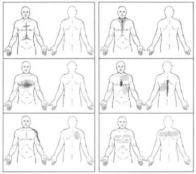
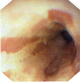
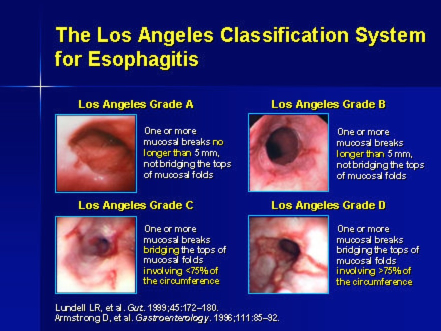

Factors contributing to the physiological LOS:
- intrinsic musculature of distal oesophagus being tonically
contracted
- sling fibres of the cardia (run diagonally across LOS, raising
pressure above stomach pressure).
- diaphragm: crura surround oesophagus, shutting it (hence measure
manometry at mid or end-expiration for accuracy)
- intra-abdominal pressure being higher than thoracic, keeping LOS
pressure high (lost in hiatal herniation).
Pathogenesis
Normally the gastro-oesophageal junction does not allowed
retrograde passage of gastric contents.
- either i) the LOS pressure is
low, or ii)
spontaneously relaxes out of coordination with peristalsis.
Any refluxate is normally cleared by gravity and saliva and
bicarbonate in the oesophagus.
Pts with symptomatic GORD usually (70%) have mechanical LOS defects
(Shackelford)
- some have overly frequent sphincter relaxation
- in a few inefficient clearance from oesophagus contributes.
See also hiatal hernia
Aetiology / Predispositions Structural
Crus / LOS malformation, pyloric stenosis. Tumour
ZE syndrome (gastrinoma).
Anything causing pyloric obstruction. Degenerative
Scleroderma-like disease.
Gastroparesis DPT
Smoking, alcohol predispose. Iatrogenic
Smooth muscle relaxants - beta adrenergics, aminophylline,
anticholinergics, Ca channel blockers, nitrates.
Surgical destruction. Functional Post-prandial transient LOS relaxation allow gas escape, takes
refluxate with it.
- most commonly Other
Anything causing raised intra-abdominal pressure.
- eg pregnancy, tumours.
BIOLOGICAL BEHAVIOUR
Pathophysiology
Often associated with hiatus hernia.
- see card for relationship.
The refluxate enters the oesophagus.
May go as far as the mouth, or be partly aspirated.
Mechanically defective LES
Relatively small subset of GORD patients = LES is ineffective.
- Manometry: pressure <6mm Hg; length <2 cm, abdo length <1
cm.
--> 75% chance of reflux if 2/3 of these, 90% if 3/3.x
Natural History of Oesophagitis
Oesophagitis is a pathological
entity, and should only be used in such terms.
- correlation with GORD symptoms is often poor.
Development of oesophagitis depends on:
- duration
- frequency
- volume
- virulence of reflux
- efficiency of clearing by peristalsis (acid time in contact)
- resilience of affected cells
Ulcerative oesophagitis follows when reflux overcomes ability of
mucosal cells to regenerate.
- stricture can follow concentric oesophagitis.
- scarring and muscular shortening can mean reduction of a hiatal
hernia impossible without lengthening procedure.
Note on Barrett's Ulcer
Sharply circumscribed defect in the columnar epithelium, resembling
a gastric ulcer.
- usually posterior & longitudinal.
- painful swallowing rather than reflux may dominate.
- may perforate.
- may haemorrhage (cf oesophagitis ulcers, which tend to just weep).
Usually do not respond to medical Rx --> resection preferred
Complications
Stricture.
- early symptoms are often mild and missed. Barrett's oesophagus.
Adenocarcinoma.
Aspiration
From coughing / hoarseness to recurrent severe pulmonary infections.
- chronic lung conditions eg abscess, bronchiectasis may develop.
Not prevented by PPIs, and antireflux surgery can be very
beneficial.
--> VOLUME REFLUX = suggest surgery
Symptoms Classically Heartburn, regurgitation, salty salivary hyper-secretion and
dysphagia
Most pathognomonic
Post-prandial posturally-aggravated substernal burning pain. Regurgitation (54%)
- (or 'effortless vomiting') - often occurs on bending or stooping or lying at night.
- particularly after a large meal.
- acid taste in the mouth.
- if food = volume regurgitation.
- note if food is digested or undigested
--> if latter, think pouch or achalasia etc. Heartburn = very reliable
symptom (80%)
- confined to epigastric / retrosternal areas; see below most common
patterns shaded by patients (Shackelford)
- usually caustic, burning or stinging.
- not pressure and does not radiate to back.

Dysphagia for solids (23%-50%)
- pain with stuck feeling at distal sternum, relieved as bolus
passes.
- may indicate peptic stricture, may just indicate inflammation.
- tumour, diverticulae should be considered. Abdo pain (29%) Belching (15%)
Bloating (15%) Globus (4%)
Extra-oesophageal Aspiration (14%)
- may occur in absence of GI symptoms
- wheezing (7%), cough (27%) Cough Recurrent pneumonia Hoarseness (21%). Dental erosion Sinus irritation (runny
nose, headache).
Complications
As above
Signs
Eroded dentition
Chronic sinusitis
If severe disease, this is interesting:
- patients may sit forward with lungs inflated to near vital
capacity
- this flattens the LOS, keeping reflux minimized.
?Supraclavicular lymph nodes
- progression to cancer.
INVESTIGATIONS Endoscopy
Indispensable.
Identifies peptic esophageal injury. Dx supported by oesophagitis on biopsy
Oesophagitis
(Skinner & Beasley)
I = erythema / oedema
II = superficial ulceration / fibrin overlying

III = deeper ulceration, submucosal fibrosis, shortening of
oesophagus.
IV = stenosis, full-thickness fibrosis & mediastinal
lymphadenopathy. The minimal lesion
considered reliable for diagnosis reflux oesophagitis is a mucosal break
- an area of slough / erythema with a sharp line of demarcation from
adjacent mucosa.
- (Recent Los Angeles classification system)

Barrett's
Extreme end of oesophageal injury, with metapastic transformation
- intestinal metaplasia arising in an endoscopically-visible
columnar-line oesophagus.
- see notes.
Is objective evidence for GORD.
'Flap-valve
grading'
With endoscope retroflexed, the GOJ has been graded
- grade IV being patulous opening with oesophagus in full view from
stomach.
Manometry
Flexible tube with pressure-sensing devices, e.g. at 5cm intervals.
Best for defining propulsion disorders:
- e.g. scleroderma, achalasia, diffuse spasm.
Analyses:
- resting LOS pressure (normally 12-30mmHg).
- relaxation (should relax to gastric baseline for a few seconds
after swallowing initiated.
- peristalsis of oesophageal body (percentage of initiated swallows
transmitted to each of four channels at 3, 8, 13, 18cm above LOS;
normal being 80%).
--> also get amplitude of the wave.
--> "Ineffective esophageal motility" = <60% peristalsis or
distal oesophageal amplitudes <30mmHg, often associated with
significant GORD.
Degree of weakness may help decide how much of a barrier can be
constructed by the anti-reflux surgeon.
New devices combine pH and impedance measurements.
24 hr pH monitoring.
Gold standard for diagnosing & quantifying acid reflux.
Can't always get it though, due to access, but helpful if you can.
Thin catheter with solid-state electrodes down oesophagus
- placed 5cm above the LES.
- spaced 5-10cm apart, sense fluctuations in pH between 2-7.
- pt records reflux in a diary, noting the time on the recorder.
- returns total number of episodes, longest episode, number lasting
longer than 5 minutes, extent of reflux when upright vs supine.
--> overall score that indicates likelihood of oesophageal injury
(DeMeester Score).
Another method is counting % of time pH is below 4 vs time of study.
- should be <1% in proximal 15cm, <4% in distal oesophagus.
May underestimate reflux, as patient will be less active and eat
less with a catheter down their gullet.
Symptom correlation with low pH measurements is confirmatory.
Bravo capsule is a wireless system clipped 5cm above LES, pH
transmitted to receiver on the belt. Oesophagogram (Ba
contrast study)
Useful. Determines anatomy of the oesophagus and distal stomach, and degree of hiatal herniation.
- may demonstrate reflux not showing with an empty stomach study.
- helps plan an operation: if the
GOJ does not reduce during the study, predicts a more difficult
operation. - shows anatomical problems e.g. strictures, pouches, tumours.
Other
Scintigraphic studies used if pt cannot tolerate naso-esophageal
intubation.
Therapeutic trial (see below) Acid perfusion test:
- 0.1 Normal HCl is infused into lower gullet via a catheter
- ?reproduction of symptoms (test with placebo to be sure). Lignocaine test:
- pt with undifferentiated substernal pain swallows 15ml of 0.5%
viscous xylocaine.
- +ve pt needs a scope. Acid reflux test:
- 200 ml of 0.1 N HCl in stomach; measure oesophageal pH
- most sensitive, but lacks specificity.
MANAGEMENT
Lifestyle
Avoid aggravating factors.
Diet change (low fat, soluble carbohydrates).
Can try avoiding coffee, tea, alcohol, cola, citrus, tomatoes or
chocolate.
- the latter impairs LOS function
Stop smoking, reduce weight, exercise, elevate head of bead.
"Chocolate, alcohol and tobacco are notorious stokers of the reflux
furnace" (Shackelford).
Small frequent meals, eat slowly, chew food well.
Avoid large meals before lying down.
Medical Aims of medical therapy
1. Decrease gastric pH
2. Promote downward traffic
3. Boost mucosal resistance
PPIs By far the most effective medical therapy.
All pts should undergo a trial of PPIs as first line therapy.
Many internists use trial of PPIs as means of confirming GORD
- heal 90% of oesophagitis, vs 30-50% pts unrelieved on H2-receptor
antagonists.
- decrease acid secretion; irreversible blockers, take 4 days before
full effect, persist for 4-5 days after therapy ceases.
- stabilize pt on a double dose for 6 weeks, then reduce as
necessary.
- long term therapy safe, though linked to hyperplastic gastric
polyp formation (benign).
- however expensive and if long-term user, may be cheaper to have an
operation.
- & do not prevent aspiration of gastric contents.
- beware lack of response and investigate them carefully.
If experience prolonged symptoms despite PPIs
Or complications are suggested
--> investigate carefully.
H1 receptor agonists = not as
good.
- symptom control and mucosal healing not well correlated.
- may be useful in difficult pts in combo with PPIs.
Prokinetics, e.g. cisapride = controversial.
Surgical
Few patients need fundoplication, total or partial. Unlike medical therapy which is started on subjective
evidence, surgical therapy
requires objective evidence
Absolute indications for oesophageal surgery:
- perforation (Barrett ulcer, PUD in intrathoracic stomach,
iatrogenic)
- uncontrolled bleeding (Barrett ulcer, PUD in intrathoracic
stomach)
- obstruction (extreme stenosis, hernial)
- gastric necrosis (hernial strangulation)
- malignancy proven or suspected
Indications for fundoplication
Paraoesophageal hernia (incarceration, symptomatic, intermittent
obstruction, recurrent aspiration, chronic ulceration, Fe
deficiency)
Reflux complications; relapse, chronicity (ulcerative oesophagitis,
peptic stricture, chronic Barret ulcer)
- including extra-oesophageal complications.
Prominent regurgitation component.
Disabling symptoms; inadequate PPI control
- symptoms persisting at a young age (takes 10 years for
cost-benefit analysis of surgery to outweigh PPIs).
- most common indication is persistent symptoms despite maximal
medical therapy and reluctance to take medicines for life.
Patient wishes for symptom control without medication.
Flags
Do not simply assume pts
with no response to PPIs need surgery; they are highly effective and
the diagnosis should be scrutinized.
*Barrett's alone is not an indication for surgery*
- while it might be true, there is no proof that surgery decreases
chance of high-grade dysplasia or cancer developing.
- surveillance would still be recommended, and Barrett's rarely
regresses completely.
- better genetic subgroup analysis may define a group that benefit
from surgery more carefully.
Contraindications
Obesity (weight loss measures instead)
Barret mucosa with HGD or adenoCa
Comorbidities conveying high risk
Portal hypertension
How to Select Patients?
Pts wanting to stop meds, recurrent symptoms, severe regurge,
complications of reflux, and significant hernia.
Note, if anti-reflux meds are ineffective, then operation unlikely
to help.
What about young patients?
Better to wait on med Rx for a while.
Although surgery is effective, it does not last forever, and repeat
procedures are difficult.
Preoperative evaluation 1. Confirm presence of reflux
--> endoscopy, contrast study, and pH study 2. Define oesophagogastric anatomy
- presence / absence of hernia, type of hernia, length of oesophagus
- mucosal pathology
--> endoscopy, contrast study; CT if complex hernia 3. Rule out motility disorders of
esophagus and stomach
- would be disastrous to do a fundo here; worse dysmotility,
symptoms, gas bloat in gastroparesis
--> manometry if any suspicion, video contrast swallowing study;
GET scintigraphy test if concern for gastroparesis.
Fundoplication Success depends on understanding the pathophysiology of GORD,
pt selection, meticulous technique and attentive post-op care.
Continue surveillance for
Barrett's? Yes. Regression of
Barrett's occurs only in less than quarter to a half of patients.
- need to continue surveillance of metaplasia after operative
intervention.
What is the role of endoscopictherapies?
Attempts to augment the LOS have been tried: suturing / plication,
invaginating devices (stomach into oesophagus), radiofrequency,
bulking injections (now abandoned)
- suturing has shown early promise, longer-term f/up required.
- radiofrequency has shown modest benefits, this and others are
undergoing clinical trials and follow-up studies so watch this
space.
Bottom line: no procedure to date has effectiveness of surgery, and
no RCTs comparing them to surgery
Also carry risk, eg perforation.